| 日付 | 2025年8月31日（日） |
|---|---|
| 山域 | 奥秩父 |
| メンバー | 家族（妻） |
| 山行形態 | 日帰り |
| アクセス | 車 |
| ルート (Map) | 馬越峠 (8:25) - (9:15) 天狗山 - (10:48) 男山 (11:29) - (12:51) 天狗山 (13:02) - (13:40) 馬越峠 |
天狗山～男山は18年前に一度歩いたことのある稜線だ。
その時は冬で、天気もさほど良くなかった。
本日は西の方が比較的天気がよさそうなので、
展望と涼しさを求めて久々にこの稜線を歩いてみることにする。
馬越峠駐車場に到着。標高1610m。
ここまで来るのに車で3時間とかなり遠いが、登山口の標高が高くて涼しいので助かる。
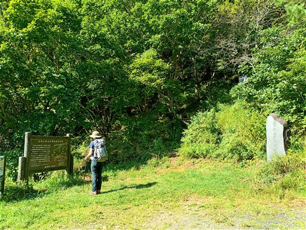
登山開始。最初はそこそこ急な斜面を登る。
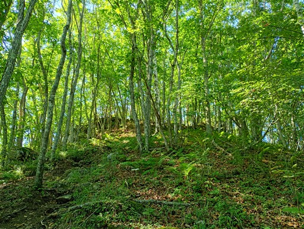
しばらく登ると傾斜が緩んで尾根道っぽくなってくる。
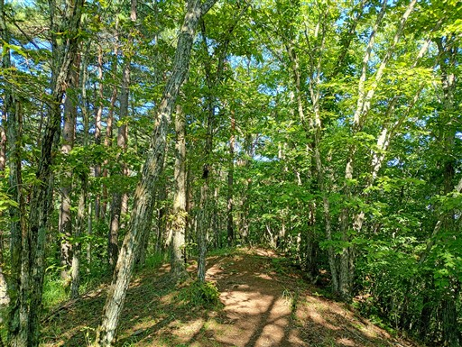
かつて歩いた大深山バス停からのルートは木の棒が置かれて塞がれている。
道が荒れているのだろうか？
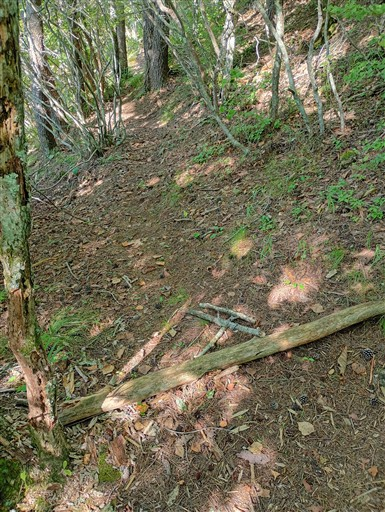
周囲はシャクナゲが多い。
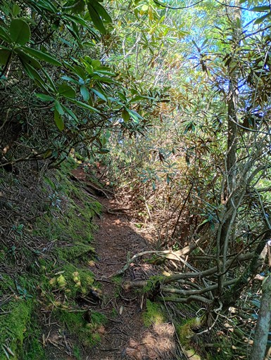
天狗山の山頂部が見えてきた。
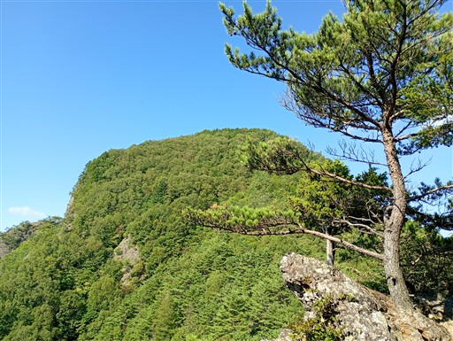
ところどころで展望が広がる。見えている山は御座山。
この辺りで一番の高峰だ。
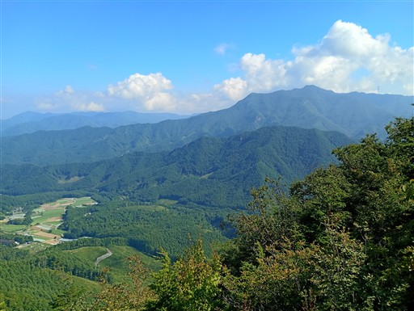
途中で岩場が出てくる。太いロープが設置されている。
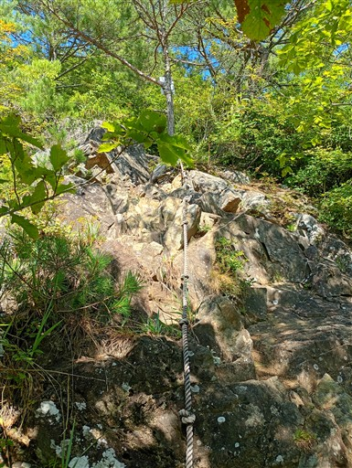
天狗山まで何ヶ所か岩場がある。
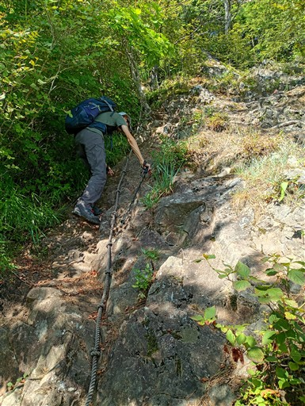
空が広くなってきた。山頂はもうすぐだ。

天狗山の山頂に到着。標高1882m。
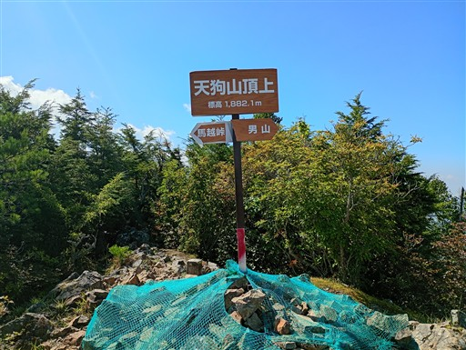
山頂からは素晴らしい展望が広がる。
目の前に見えるのはこれから向かう男岳、その奥は八ヶ岳連峰だ。
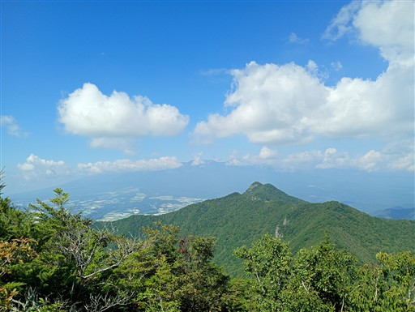
山頂に鎮座する小さな祠。
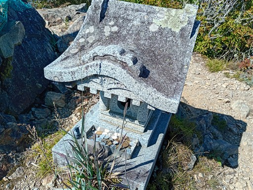
なぜかチェスのナイトが置かれている。
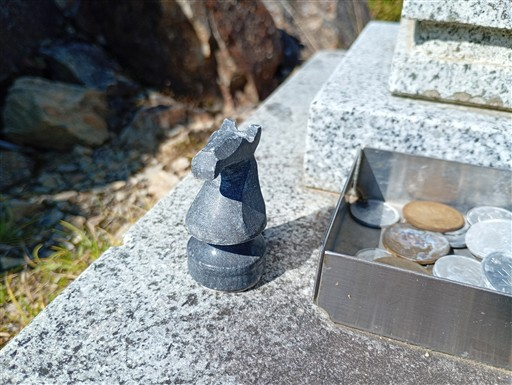
男山に向かって歩き出す。最初は急斜面の下りだ。
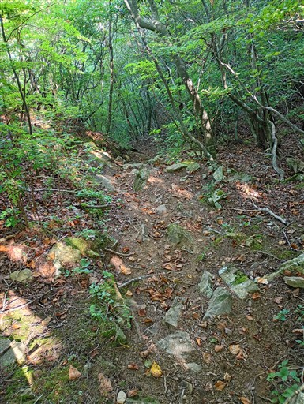
斜面一帯にソーラーパネルが広がっている。18年前には無かったものだ。
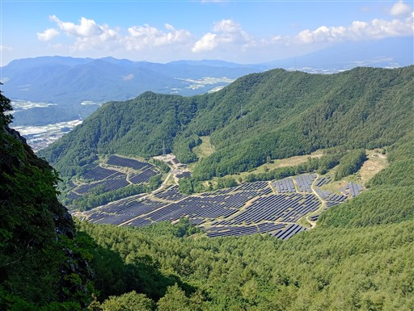
天狗山～男山の稜線も岩場が連続する。難易度は高くない。
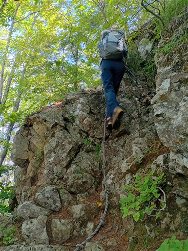
最低鞍部は平坦で歩きやすい道。風が通り抜けていて気持ちが良い。
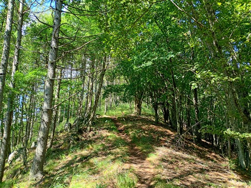
巨大なマルバダケブキ。
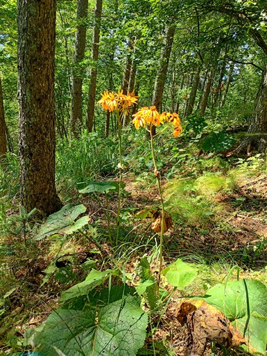
ミヤマモジズリ。初めて見かけた花だ。
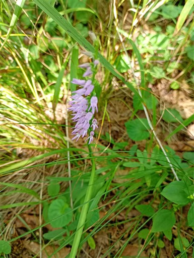
遠く瑞牆山が見えている。ギザギザ頭が特徴的だ。
瑞牆山は周囲の山より標高が低いので、スカイラインを見られる場所はまれだ。
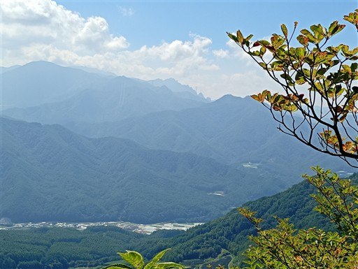
展望の良い爽快な稜線。
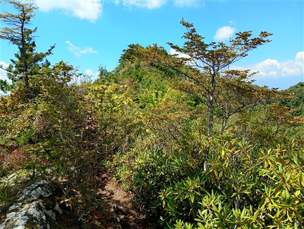
振り返ると怪異な山容の天狗山が良く見える。
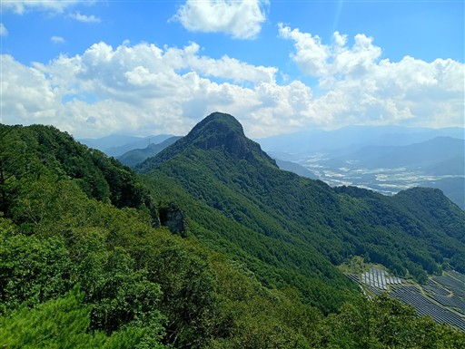
岩場が続く。歩いていて楽しい道だ。
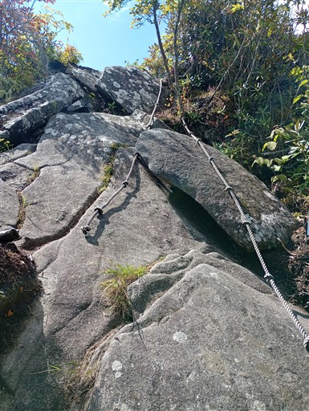
この辺りは一面苔が広がっている。
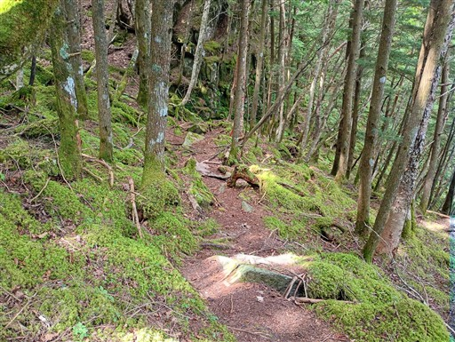
男山山頂に到着。標高1851m。
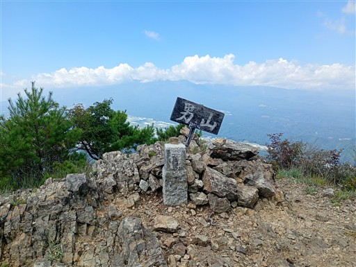
山頂からの展望は天狗山以上に素晴らしい。
目の前には八ヶ岳連峰が聳えている。山頂部の大半は雲の中なのが残念だ。
平野部では高原野菜畑が広がっている。
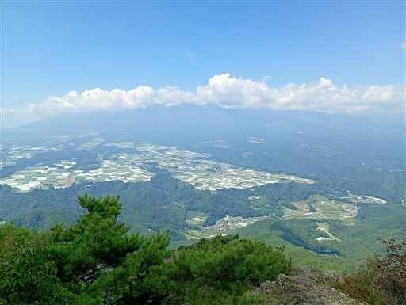
奥秩父の山々。金峰山、瑞牆山などが見えている。
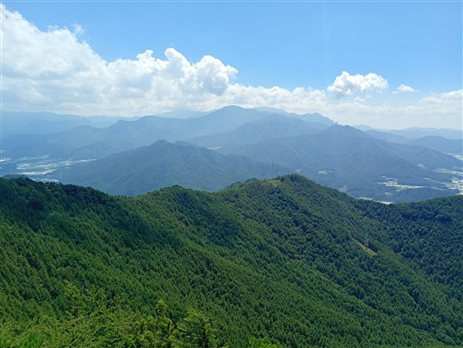
そして歩いてきた天狗山方面。
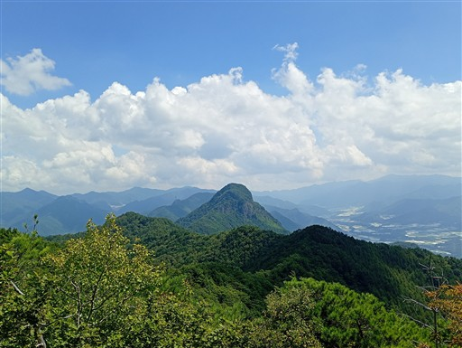
山頂はキアゲハやカラスアゲハなどたくさんの蝶が飛んでいる。
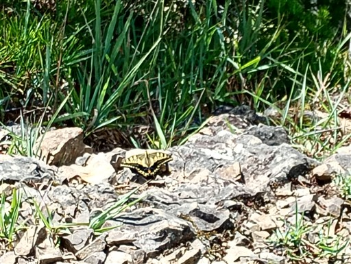
稜線はこの先、岩尾根が続いている。この尾根に登山道は無い。
山頂で昼食休憩を取ったら下山する。
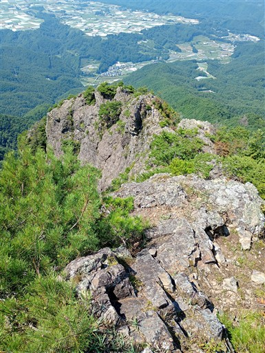
元来た道を引き返す。途中で垣越山を通過。
往路ではこの標識に気づかなかった。
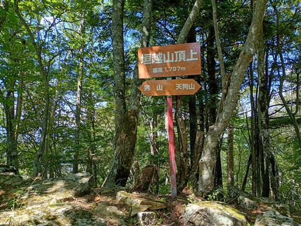
緑の中の登山道を歩く。
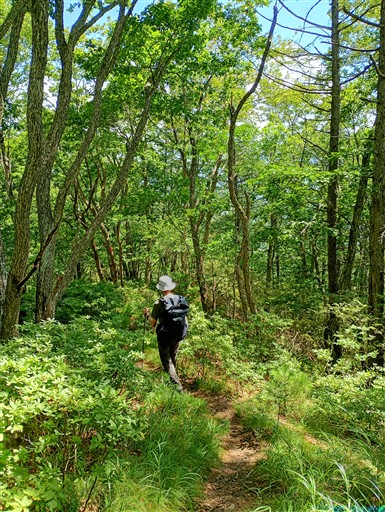
岩場に設置されたロープ。
トラロープの黄色い部分がほつれて、黒の部分のみになっている。
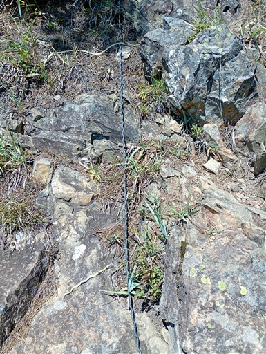
イワインチンがところどころで見られる。
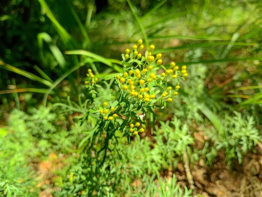
天狗山に戻ってくる。
ここから下山で進む方向を間違えてしまう。5分ほどロス。
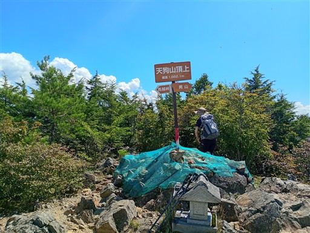
無事、駐車場に戻ってくる。
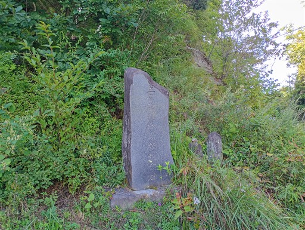
下山後の帰りに道、高原野菜畑を眺める。
この辺りはレタス、キャベツが有名で、道にはレタス街道という名前が付けられている。
天狗山～男山はお手軽に登れて、空いていて、素晴らしい展望、楽しい登山道がある非常に良い山だった。
アクセスが不便で比較的マイナーな山だが、知る人ぞ知る名山だと思う。
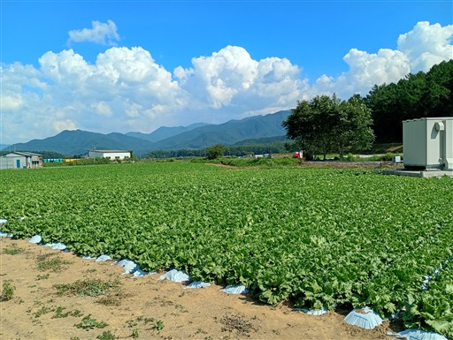